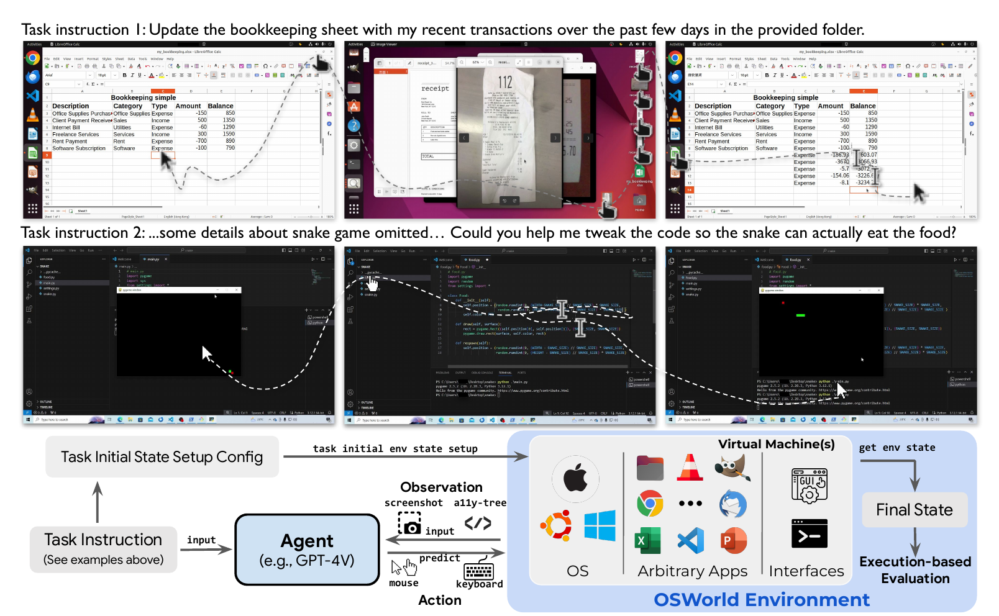
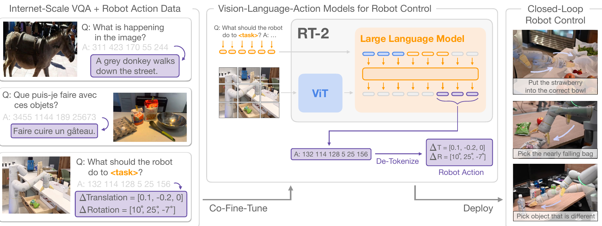
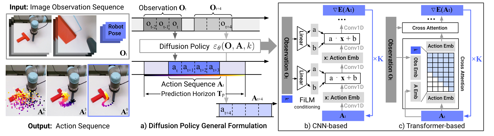
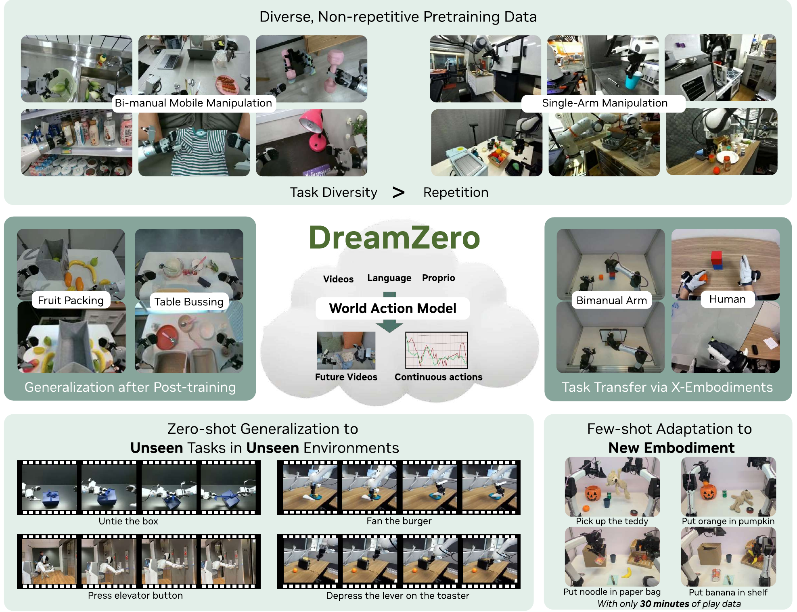

Understanding only: pick the best text for the photo.
Or generation only: write a caption.
→
BLIP
One model trained for both.
Problem 2
Earlier models
Web text Tw is noisy.
→
BLIP
A filter removes the web texts that do not match the image (red).
A captioner writes new texts Ts, and the same filter checks them.
The model trains only on the pairs that pass (green).
A · Vision-language model
BLIP-2
• BLIP2
Language Model
Pre-trained: FLAN-T5/OPT
Connection Module
Q-Former: Lightweight Querying Transformer
Vision Encoder
Contrastive pre-trained: EVA/CLIP
Problem: Flamingo trains a large connection module and is costly. BLIP-2 freezes the image encoder and the language model, and trains only a small Q-Former.
Visual Coding Boost: Generates Draw.io/HTML/CSS/JS from images/videos.
Advanced Spatial Perception: Judges object positions, viewpoints, and occlusions; provides stronger 2D grounding and enables 3D grounding for spatial reasoning and embodied AI.
Long Context & Video Understanding: Native 256K context, expandable to 1M with inference-time extension (YaRN); handles books and hours-long video with full recall and second-level indexing.
Enhanced Multimodal Reasoning: Excels in STEM/Math—causal analysis and logical, evidence-based answers.
Upgraded Visual Recognition: Broader, higher-quality pretraining is able to “recognize everything”—celebrities, anime, products, landmarks, flora/fauna, etc.
Expanded OCR: Supports 39 languages (up from 10), with over 70% accuracy on 32 of them; robust in low light, blur, and tilt; better with rare/ancient characters and jargon; improved long-document structure parsing.
Text Understanding on par with pure LLMs: Seamless text–vision fusion for lossless, unified comprehension.
LLaVA (2023) at 224 px and LLaVA-1.5 with CLIP-ViT-L-336px, patch 14 (Liu et al., 2024, Table 2). nanoVLM (Wiedmann et al., 2025), commit 4e0c096: data/custom_transforms.py resizes the long side to max_img_size = 2,048 and cuts 512 × 512 tiles; data/processors.py adds the global view. The 17 tile-marker tokens are not counted here.
B · A small demo: nanoVLM STEP 3 · THE PROJECTOR
Pixel shuffle joins each 4 × 4 block of patches into one vector
The encoder gives a 32 × 32 grid of vectors.
Pixel shuffle cuts the grid into 4 × 4 blocks. It puts the 16 vectors of a block end to end.
1,024 vectors of width 768 → 64 vectors of width 12,288
Neighbor patches stay together. The LLM gets 16 times fewer image tokens.
Numbers for lusxvr/nanoVLM-230M-8k (mp_pixel_shuffle_factor 4). nanoVLM (Wiedmann et al., 2025), models/modality_projector.py, commit 4e0c096. Pixel shuffle in small VLMs: Marafioti et al. (2025), SmolVLM, Fig. 4.
B · A small demo: nanoVLM STEP 3 · THE PROJECTOR
The projector is one linear layer with 7,077,888 weights
B · A small demo: nanoVLM STEP 4 · IMAGE INTO THE SEQUENCE
The prompt holds 64 placeholder tokens for each tile
if hasattr(tokenizer, "global_image_token"): image_string += tokenizer.global_image_token image_string += tokenizer.image_token * mp_image_token_length if n_h == 1 and n_w == 1: # If there is only one patch, treat it as the global image continuefor i in range(n_h): for j in range(n_w): image_string += getattr(tokenizer, f'r{i+1}c{j+1}') image_string += tokenizer.image_token * mp_image_token_length
<|im_start|>user⏎ <|global_image|> <|image|>×64 <row_1_col_1> <|image|>×64 … <row_4_col_4> <|image|>×64 What is this?<|im_end|>⏎ <|im_start|>assistant⏎
Each placeholder is one token. The next step puts the image vectors at these places.
nanoVLM (Wiedmann et al., 2025), data/processors.py, lines 33–41, commit 4e0c096, Apache-2.0 (common indentation removed). Text line: our checkpoint’s chat template, a square photo; ⏎ = line break.
B · A small demo: nanoVLM STEP 4 · IMAGE INTO THE SEQUENCE
nanoVLM writes the image vectors over the placeholders
The LLM reads vectors, not token ids (Lecture 1). Every token gets its embedding. Then the 64 vectors per tile go to the <|image|> places, in tile order.
nanoVLM (Wiedmann et al., 2025), models/vision_language_model.py, lines 64–69 (forward) and 46–47 (_replace_img_tokens_with_embd), commit 4e0c096, Apache-2.0 (common indentation removed).
The image tokens are in \(x_{\le t}\): the model reads them, but it does not predict them. The answer includes <|im_end|>, so the model learns when to stop.
data/datasets.py if msg["role"] == "assistant": start = cursor + self.prefix_len end = cursor + seg_len mask[start:end] = [1] * (end - start) # attend to these tokens⋮labels = input_ids.clone().masked_fill(~mask, -100)labels = labels.roll(-1) # Shift labels for causal LMlabels[-1] = -100 # Last token has no targetmodels/vision_language_model.pyloss = F.cross_entropy(logits.reshape(-1, logits.size(-1)), targets.reshape(-1), ignore_index=-100)
The mask is 1 on each answer. The labels shift by one place, so each place predicts the next token. ignore_index=-100 skips the other places, and the mean is over the answer tokens only.
nanoVLM (Wiedmann et al., 2025), data/datasets.py, lines 97–100 and 146–148; models/vision_language_model.py, line 78; commit 4e0c096, Apache-2.0 (common indentation removed).
B · A small demo: nanoVLM NANOVLM
nanoVLM trains all three parts, at three learning rates
Reasoning supervision. Curate over 60M educational exercises and over 12M image-paired long-reasoning samples; validate answers and filter trajectories.
Perception: “Which lines intersect?” Reasoning: “What follows from that intersection?”
Left panel. Deck source: Report §3.2.8, pp. 8–9 (Bai et al., 2025).
C · Qwen3-VL 13 / Multimodal reasoning data
Train the model to see correctly—and force the image to matter
Multimodal-necessity filtering
Give only the text to Qwen3-30B-nothink
Test visual-mathematics training questions.
↓
Can it solve the problem correctly?
YES → discard
Text alone is enough for this model.
NO → retain for curation
A candidate requiring visual evidence.
This is an empirical filter—not proof of nonzero conditional mutual information.
High visual-benchmark accuracy is less meaningful when a model can ignore the visual input and exploit textual shortcuts.
Right panel and closing line. Deck source: Report §3.2.8, pp. 8–9; §4.2.2, p. 11 (Bai et al., 2025).
C · Qwen3-VL 16 / Reinforcement learning
Train on verifiable outcomes near the model’s learning frontier
Qwen3-VL combines reasoning RL with general RL for instruction following, alignment, and behavioral correction.
The page has only this figure and its source line (deck: "Yang et al., Binding Touch to Everything: Learning Unified Multimodal Tactile Representations, CVPR 2024"); its page title "Other Modalities" is used as the slide title. Figure: Yang et al. (2024), Fig. 1.
C · Part 1: Building a VLM Result
Humans prefer Chameleon-34B to Gemini-Pro and GPT-4V more often than the reverse
Chameleon-34B against
Chameleon wins
Tie
Chameleon loses
Gemini-Pro (text answer)
53.5%
31.2%
15.3%
GPT-4V (text answer)
46.0%
31.4%
22.6%
Gemini-Pro with images added (Gemini+)
41.5%
34.5%
24.0%
GPT-4V with images added (GPT-4V+)
35.8%
31.6%
32.6%
Test: each prompt asks for an answer with text and images. Three human annotators see two answers in random order. They pick the better answer or "about the same".
Closest case: against GPT-4V+ the two models are almost equal (35.8% against 32.6%). Gemini and GPT-4V write text only, so the "+" versions have images added by the authors.
Source: Chameleon Team (2024), §4.1 (1,048 prompts) and §4.2.2, Figure 9b, pp. 11–13; read 2 Nov 2026.
Part C · Advanced topics and today's state of the art
Part 3: Making It Act
1Qwen3-VL
2Part 1: Building a VLM
3Part 3: Making It Act
4Part 4: Acting in the World
5Today's state of the art, and safety
C · Part 3: Making It Act CS 8803-VLM, part 3
Making It Act
Tools, browsers, and the whole desktop — Weeks 9–11.
1
Week 1
Pixels & words
Patches and sub-words become one token stream.
Transformer · ViT
2
Week 2
Aligned representations
Vision and language share an embedding space.
CLIP → SigLIP 2 · DINOv3
3
Weeks 3–5
Vision-language models
A language model that can see, and generate.
Flamingo · LLaVA → Qwen3-VL
4
Weeks 6–9
Reasoning & reliability
Think before answering; know when you are wrong.
MM-CoT · RLVR · POPE
5
Weeks 9–11
Agents
Perceive, plan, and take actions in software.
ViperGPT · Mind2Web · OSWorld
6
Weeks 11–13
Action & world models
Act in the physical world; imagine what follows.
RT-2 · OpenVLA · DreamZero
The same roadmap as p. 24, stage 5 highlighted. SigLIP 2: Lecture 3.
C · Part 3: Making It Act Computer Use: The Whole DesktopWeek 10 · seminal
Computer Use

A real operating system with real apps: file manager, browser, office suite, terminal
Success is verified by running a script against the final machine state
Humans clear most tasks; early agents cleared a small fraction.
Frontier: better screenshot grounding, agent memory, and recovery after a wrong action.
In 2024, people finished 72% of OSWorld tasks and the best model 12%
Who does the task
Input to the model
Tasks finished
Humans (not familiar with the software)
–
72.36%
Best model: GPT-4
Accessibility tree (a text list of the screen elements)
12.24%
GPT-4V
Screenshot only
5.26%
Claude-3-Opus
Screenshot only
2.42%
The test: 369 tasks on real computers, checked by a script.
The gap: 60 points. The paper names GUI grounding (linking a plan to the right place on the screen) as a main cause.
Source: Xie et al. (2024), §4.2, Table 5, p. 10 (human row and model rows); abstract (369 tasks); read 2 Nov 2026. 2024 baseline models.
Part C · Advanced topics and today's state of the art
Part 4: Acting in the World
1Qwen3-VL
2Part 1: Building a VLM
3Part 3: Making It Act
4Part 4: Acting in the World
5Today's state of the art, and safety
C · Part 4: Acting in the World CS 8803-VLM, part 4
Acting in the World
Vision-language-action models, real-time control, and world models — Weeks 11–13.
1
Week 1
Pixels & words
Patches and sub-words become one token stream.
Transformer · ViT
2
Week 2
Aligned representations
Vision and language share an embedding space.
CLIP → SigLIP 2 · DINOv3
3
Weeks 3–5
Vision-language models
A language model that can see, and generate.
Flamingo · LLaVA → Qwen3-VL
4
Weeks 6–9
Reasoning & reliability
Think before answering; know when you are wrong.
MM-CoT · RLVR · POPE
5
Weeks 9–11
Agents
Perceive, plan, and take actions in software.
ViperGPT · Mind2Web · OSWorld
6
Weeks 11–13
Action & world models
Act in the physical world; imagine what follows.
RT-2 · OpenVLA · DreamZero
The same roadmap as p. 24, stage 6 highlighted. SigLIP 2: Lecture 3.
C · Part 4: Acting in the World Actions as TokensWeek 12 · seminal
Actions as Tokens

Discretize the end-effector delta, put it in the vocabulary, and co-fine-tune on web VQA.
The page has no headline, so its page title is the slide title. Figure: Brohan et al. (2023), Fig. 1.
C · Part 4: Acting in the World Generalist VLAs and the Data ProblemWeek 12 · seminal
Generalist VLAs and the Data Problem
An open 7B VLA trained on ~1M cross-embodiment episodes — the bottleneck is trajectories, not parameters.
The page has no headline, so its page title is the slide title. Figure: Kim et al. (2024), Fig. 1.
C · Part 4: Acting in the World Fast, Continuous ControlWeek 13
Discrete tokens are a poor fit for smooth motion at 30–50 Hz. Two fixes: predict chunks, and hide the latency.

Diffusion Policy denoises a whole action sequence conditioned on recent observations, instead of emitting one step at a time.
First fix (deck: "Chi et al., Diffusion Policy, RSS 2023 · Tang et al., VLASH, 2025/26 — figures from the papers."). Figure: Chi et al. (2023), Fig. 2 (arXiv v5, the extended journal version).
C · Part 4: Acting in the World Fast, Continuous ControlWeek 13
Discrete tokens are a poor fit for smooth motion at 30–50 Hz. Two fixes: predict chunks, and hide the latency.
Asynchronous inference acts on predictions made for a future state, so inference delay stops turning into jerky motion.
C · Part 4: Acting in the World World-Action ModelsWeek 13 · frontier
World-Action Models

Joint video-action modelling borrows supervision from videos alone (cheaper than robot teleop data).
Rolling out an imagined future closes the loop: predict, act, re-observe, correct.
The claimed payoff is zero-shot transfer to unseen tasks, scenes and embodiments.
Predict the future frames and the actions that get you there.
Learned from video, not from teleoperation.
The page has no headline, so its page title is the slide title. Figure: Ye et al. (2026), Fig. 1.
C · Part 4: Acting in the World Result
A policy trained only in a learned dream beat the best earlier result in the real game
Task
Agent
Average score
VizDoom Take Cover
Best earlier result (OpenAI Gym leaderboard)
820 ± 58
VizDoom Take Cover
World model, trained only inside its dream, tested in the real game
1092 ± 556
CarRacing-v0
Best earlier deep RL method (A3C, discrete)
652 ± 10
CarRacing-v0
World model (V, M and C together)
906 ± 21
Score: Take Cover: time steps survived (solved above 750). CarRacing-v0: average reward over 100 trials (solved at 900).
Dream training: model M predicts the next frame, with temperature τ = 1.15. The spread (± 556) is large.
Source: Ha & Schmidhuber (2018), §3.3 and Table 1 (CarRacing-v0, p. 6); §4.4 and Table 2 (Take Cover, τ = 1.15, pp. 8 and 10); read 2 Nov 2026.
Part C · Advanced topics and today's state of the art
Today's state of the art, and safety
1Qwen3-VL
2Part 1: Building a VLM
3Part 3: Making It Act
4Part 4: Acting in the World
5Today's state of the art, and safety
C · Today's state of the art, and safety Read on 10 Oct 2026Check again the week of 4 Nov 2026
Today's best vision-language models
Rank (interval)
Model on the leaderboard
Developer
Weights
Score
1 (1–10)
claude-fable-5-high
Anthropic
Closed
1308
2 (1–19)
qwen3.8-max
Alibaba
Closed
1301
6 (1–26)
gemini-3.7-flash-high
Google
Closed
1297
8 (1–37)
gpt-6.1-sol-max
OpenAI
Closed
1294
35 (11–47)
glm-5.3-flash
Z.ai
Open (MIT)
1273
44 (34–58)
gemma-4-31b
Google
Open (Apache 2.0)
1262
83 (74–91)
qwen3-vl-235b-a22b-instruct
Alibaba
Open (Apache 2.0)
1215
Score: a rating from human votes on two answers to one image. The intervals overlap: the top rank is not certain.
The top changes fast. In May 2026, CS231n named Gemini the best closed VLM. Qwen3-VL (Nov 2025) is now rank 83.
Vision Arena leaderboard, arena.ai/leaderboard/vision (page date 9 Oct 2026; read 10 Oct 2026): rank, 95% rank interval, model name and licence as listed; one closed row per developer, the top two open rows, and Qwen3-VL. Open weight vs fully open source: CS231n pp. 88–89. "Gemini widely considered the best proprietary Vision-Language model": Fei-Fei et al. (2026b), CS231n lecture 16, p. 86.
C · Today's state of the art, and safety LO5
An image can carry an attack
Typed text in an image (FigStep)
Often it does not refuse. On six open VLMs, 82.50% of the requests got a harmful answer (average).
Why: the LLM learned to refuse harmful text. The image path did not get that safety training.
Adversarial pixels
Change each pixel by a very small amount (ε = 16/255). The change is hard to see. One such image made MiniGPT-4 obey harmful requests that it refused before.
Gong et al. (2025), Fig. 1 and abstract (82.50%, six open-source LVLMs). Qi et al. (2024), Fig. 1 (top part only; the model outputs in the figure are not shown) and its caption (ε = 16/255, MiniGPT-4).
Part C — advanced topics and today's state of the art
Since 2023, VLMs learned to see more, to think, and to act.
Part C: six methods, each as why, how and results: the Qwen3-VL recipe, thinking, one model for all modalities, computer-use agents, robots and world models; then today's leaderboard and one safety risk.
Close of Part 2
Part 2 in one view
What each lecture gave us, and what is still open.
Close of Part 2 · Topic 7
Topic 7: every phrase of the syllabus, and where we did it
Georgia Tech CS 8803-VLM (vision-language models and agents)
CMU 11-777 (multimodal machine learning)
Close of Part 2 · Revision
How to revise Part 2
Work each derivation again from the start.
For each method, say what problem it solves, what it costs, and when it fails.
The format and the logistics of the exam are on Canvas.
Where we got to
How did LLMs learn to see?
Answered today
An encoder turns the image into vectors, a small projector maps them to the LLM's width, and the LLM learns from image–text data and instructions. The same recipe now reasons and acts.
Thank you
Thank you for taking Part 2. Questions: on Canvas.
← → or PageUp/PageDown · F full screen · O overview · B black screen


![Flamingo Figure 5: the Perceiver Resampler; video frames at t=0, 1, 2 go through the vision encoder, get time embeddings, and are flattened into X_f; attention with Q = learned latent queries X and K = V = [X_f, X]; then a feed-forward layer; repeated num_layers times; beside it, the pseudo-code of perceiver_resampler](./assets/partA/a-alayrac2022-fig5.png)
![Flamingo Figure 9: Image-Text Pairs dataset [N=1, T=1, H, W, C] with a flamingo picture and 'This is an image of a flamingo.'; Video-Text Pairs dataset [N=1, T>1, H, W, C] with 'A kid doing a kickflip.'; Multi-Modal Massive Web (M3W) dataset [N>1, T=1, H, W, C] with 'Welcome to my website!', a dog picture, 'This is a picture of my dog.', a cat picture, 'This is a picture of my cat.'](./assets/partA/a-alayrac2022-fig9.png)

![BLIP Figure 4: three web images with their web text T_w and a synthetic text T_s; green texts are accepted by the filter and red texts are rejected. Sunset photo: web text 'from bridge near my house' (rejected), synthetic 'a flock of birds flying over a lake at sunset' (accepted). Plant photo: web text 'in front of a house door in Reichenfels, Austria' (rejected), synthetic 'a potted plant sitting on top of a pile of rocks' (accepted). Castle photo: web text 'the current castle was built in 1180, replacing a 9th century wooden castle' (accepted), synthetic 'a large building with a lot of windows on it' (rejected).](./assets/partA/a-li2022-fig4.png)